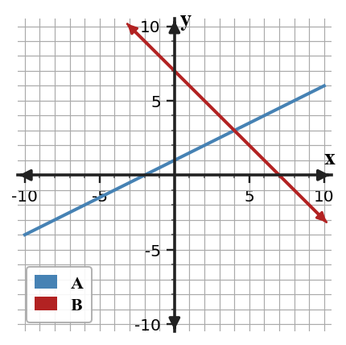
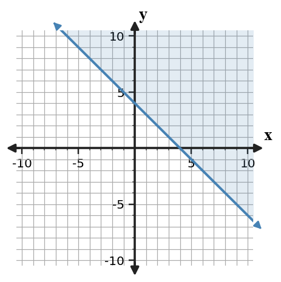
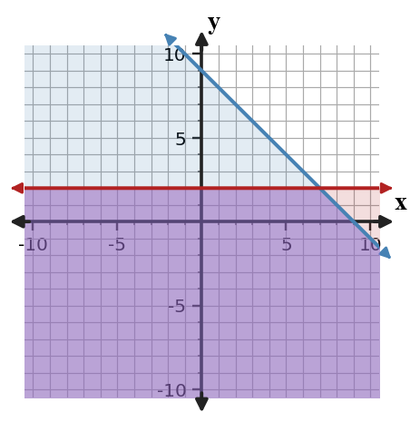

Unit 3 Progress Tracker
Students will solve, represent, interpret, and justify systems and constraints using graphs, algebraic methods, solution types, and contextual meaning.
I need more instruction and practice.
I understand most of it but need more practice.
I can do this independently.
I can teach it.
Progress Tracking
Progress Tracking
Evidence
Progress Tracking
Evidence
Progress Tracking
Evidence
Progress Tracking
Evidence
Learning Ladder
| Rung | I Can Statement | DOK | Level |
|---|---|---|---|
| 8 | I can design a system of equations or inequalities that models a constrained situation and interpret the solution set. | DOK 4 | Above |
| 7 | I can construct and revise a representation so equations, graphs, and context tell the same story about a system. | DOK 4 | Above |
| 6 | I can assess which solving method is efficient for a system and support the choice with equation structure. | DOK 3 | Essential |
| 5 | I can critique a graphical or algebraic solution by checking whether it satisfies both constraints. | DOK 3 | Essential |
| 4 | I can apply substitution or elimination to solve a system and interpret the ordered pair. | DOK 2 | Essential |
| 3 | I can construct graphs of systems of equations or inequalities and represent the solution set. | DOK 2 | Essential |
| 2 | I can use graph features and equation forms to interpret solution types for systems. | DOK 1 | Essential |
| 1 | I can apply vocabulary for systems, constraints, boundaries, intersections, and solution regions. | DOK 1 | Essential |
Student Goal Setting
Unit 3 Practice by Depth of Knowledge
Format: 3-5 minute warm-up, vocabulary check, representation recognition, or exit ticket
Purpose: DOK 1 reveals whether students can read systems, equations, inequality symbols, boundary types, intersections, and solution regions before choosing a solving method.
Assessment Ideas
- Solution Type Clues Can Be Assessed After Section 3.1 - Classify solution types from slope, intercept, and equivalent-equation clues; connect elimination contradictions or identities to graph relationships; name the graph feature that supports each conclusion.
- Substitution Structure Can Be Assessed After Section 3.2 - Use isolated-variable equations to set up substitution; write the resulting one-variable equation; choose which system is most substitution-ready from its equation structure.
- Inequality Graph Clues Can Be Assessed After Section 3.4 - Represent inequality-symbol clues with correct boundary type and shaded side; distinguish vertical and horizontal boundary cases; connect strict and inclusive symbols to graph features.
- Feasible Point Vocabulary Can Be Assessed After Section 3.5 - Apply feasibility vocabulary to systems of inequalities; connect failed constraints to non-feasible points; distinguish when solid and dashed boundaries can include points.
DOK 1 performance shows whether students can read the core clues of Unit 3 before solving: solution-type evidence, substitution readiness, inequality graph features, and feasibility language. The data separates vocabulary/recognition gaps from later procedural errors.
The graph shows two lines from a system. What does the point where the lines intersect represent in a system of equations?

Does $(2,4)$ satisfy both equations in the system $x+y=6$ and $\,3x-y=2$? State yes or no and name the equation that proves your answer.
The equations $y=-3x+5$ and $y=-3x-1$ have the same slope and different $y$-intercepts. Classify the solution type.
- one solution
- no solution
- infinitely many solutions
- not enough information
In the system $y=4x-7$ and $\,2x+y=11$, which expression should replace $y$ during substitution?
In a ticket situation, $a$ represents adult tickets and $s$ represents student tickets. What does the equation $a+s=145$ represent?
For the inequality $y\ge -2x+3$, should the boundary line be solid or dashed?
For $y\lt \frac{1}{2}x-4$, should the solution region be above or below the boundary line?
In a system of inequalities, what must be true for a point to be called feasible?
Format: Mini-quiz, graph/table task, matching task, partner check, or short written task
Purpose: DOK 2 reveals whether students can carry out solving and graphing procedures while connecting their work to solution meaning.
Assessment Ideas
- Solving Systems Can Be Assessed After Section 3.1 - Solve systems by elimination or graphing; check ordered-pair solutions in both equations; use equation structure to predict an ordered pair, contradiction, or identity.
- Substitution Solving Can Be Assessed After Section 3.2 - Substitute isolated expressions into the other equation; solve the resulting one-variable equation; interpret ordered-pair and solution-type results from substitution.
- Context Systems Can Be Assessed After Section 3.3 - Build systems from ticket, coin, and plan contexts; solve for both variables or break-even values; interpret coordinates and before-and-after comparisons in the situation.
- Systems of Inequalities Can Be Assessed After Section 3.5 - Model systems of inequalities by graphing overlapping solution regions; test candidate points algebraically; generate feasible and non-feasible whole-number examples from constraints.
DOK 2 performance shows whether students can carry out the main Unit 3 procedures accurately: solving by elimination, graphing, and substitution; writing systems from contexts; and graphing or testing systems of inequalities. The data highlights whether errors come from algebraic execution, graph construction, or contextual interpretation.
Graph the system on the same axes, then state the point of intersection.
$$\begin{aligned}y&=x+2\y&=-x+8\end{aligned}$$
Solve the system by elimination and check your ordered pair in both equations.
$$\begin{aligned}2x+3y&=19\\4x-3y&=5\end{aligned}$$Solve by substitution. Then write one sentence explaining what the ordered pair means as the solution to both equations.
$$\begin{aligned}y&=2x-1\x+y&=14\end{aligned}$$A school event sells adult tickets for $11 and student tickets for $7. A total of 90 tickets are sold for $770. Let $a$ be adult tickets and $s$ be student tickets. Write and solve a system for $a$ and $s$.
The table shows values from one line in a system. Write an equation for the line, then use it with $y=-x+12$ to find the system solution.
| $x$ | 0 | 2 | 4 |
|---|---|---|---|
| $y$ | 3 | 5 | 7 |
Graph the inequality $y\ge -x+3$. Label the boundary type and describe the shaded region in words.
Test whether $(3,5)$ is feasible for the system. Show substitution into both inequalities.
$$\begin{aligned}y&\ge x+1\y&\le -2x+12\end{aligned}$$Graph the system of inequalities and identify one point in the overlapping solution region.
$$\begin{aligned}y&\ge x-2\y&\le -x+6\end{aligned}$$Format: Constructed response, model critique, strategy comparison, representation analysis, or discourse prompt
Purpose: DOK 3 reveals whether students can choose methods, critique representations, and reason about constraints rather than only completing procedures.
Assessment Ideas
- Representation Evidence Can Be Assessed After Section 3.1 - Analyze system representations and solving methods; use equations and table values to locate solutions; critique incomplete elimination work and justify efficient methods from structure.
- Substitution Analysis Can Be Assessed After Section 3.2 - Construct substitution plans before solving; repair table or substitution-step errors; justify how corrected expressions affect the solution path.
- Inequality Graph Critique Can Be Assessed After Section 3.4 - Critique inequality graphs and statements for boundary and shading accuracy; test points as evidence for the solution region; revise graphing strategies for inequalities in different forms.
- Feasible Region Reasoning Can Be Assessed After Section 3.5 - Determine feasible-region conclusions from constraints; compare graphing and point-testing methods for candidate points; justify empty or nonempty regions from boundary relationships.
DOK 3 performance shows whether students can use evidence to defend decisions across representations, not just complete procedures. These tasks reveal how well students critique elimination and substitution work, evaluate inequality graphs, choose efficient methods, and reason about feasible regions.
A student adds the equations below and says the solution is $y=4$.
$$\begin{aligned}3x+2y&=17\\-3x+y&=1\end{aligned}$$Critique the conclusion. Identify the missing step and explain how to complete the solution.
Analyze the system without graphing first.
$$\begin{aligned}6x-9y&=12\\-2x+3y&=-4\end{aligned}$$Use equation structure to decide the solution type, then explain what the graph would show.
For the system below, compare substitution and elimination as solving methods. Which method is more efficient, and what equation structure supports your choice?
$$\begin{aligned}y&=-2x+9\\4x+2y&=18\end{aligned}$$The expression $f(x)=3x-2$ and the table row are supposed to match before the expression is substituted into another equation.
| $x$ | 0 | 1 | 2 | 3 |
|---|---|---|---|---|
| $f(x)=3x-2$ | -2 | 1 | 5 | 7 |
Find the first mismatch, correct it, and explain how the mismatch would affect a substitution solution.
A student models a coin problem with $n+q=50$ and $\,5n+25q=7.50$. The student says the system is ready because the second equation shows money. Assess the reasonableness of the model, revise it if needed, and explain the unit issue.
A student claims the graph below represents $y\lt -x+4$. Critique the boundary and shading decisions, then state how the graph should be revised.

Construct a graphing strategy for $\,4x-2y\le 10$. Your strategy must include rewriting the boundary, deciding solid or dashed, selecting a test point, and deciding the shaded side.
Analyze the structure of the system without graphing every point.
$$\begin{aligned}y&\ge x+6\y&\le x-3\end{aligned}$$Decide whether the feasible region is empty or nonempty, and justify your decision using the relationship between the boundary lines.
Format: Brief performance task, modeling task, critique-and-revise task, design task, or capstone synthesis task
Purpose: DOK 4 reveals whether students can synthesize systems, inequalities, and constraints into a coherent model in a short performance setting.
Assessment Ideas
- Break-Even System Modeling Can Be Assessed After Section 3.3 - Model break-even systems from two-option contexts; interpret before-and-after cost comparisons; recommend efficient solving methods using equation structure.
- Substitution Task Design Can Be Assessed After Section 3.2 - Create substitution-ready systems with a required solution; connect tables or fixed equations to a second line; prove the constructed solution through substitution.
- Inequality Model Revision Can Be Assessed After Section 3.4 - Adapt flawed inequality models to match contextual language; correct symbols, boundaries, and shading; generate feasible and non-feasible points that fit the revised constraint.
- Constraint Decision Revision Can Be Assessed After Section 3.5 - Design systems of inequalities for constraint decisions; compare candidate feasible plans; justify recommendations using total, cost, and overlap constraints.
DOK 4 performance shows whether students can create, revise, and defend models under constraints. The data reveals whether students can connect break-even systems, substitution-ready structures, inequality revisions, and feasible decision recommendations into coherent mathematical arguments.
A community center can choose Plan A, which costs $35 plus $8 per hour, or Plan B, which costs $75 plus $3 per hour. Define variables, write a system, solve for the break-even point, and interpret what happens before and after that point.
Create a system of two linear equations with solution $(3,5)$ that is efficient to solve by substitution because one equation is already solved for $y$. Show a substitution solution path and explain why your structure makes substitution efficient.
A study plan says a student needs at least 24 total practice problems, with $o$ online problems and $p$ paper problems. A draft model uses $o+p\lt 24$ with a dashed boundary. Revise the inequality, describe the correct boundary and shading, and list one feasible and one non-feasible whole-number point.
A theater sold 160 tickets and collected $1720. Adult tickets cost $14 and student tickets cost $9. Define variables, write a system, solve the system, and write a one-sentence conclusion that interprets both coordinates.
A class has at most $180 for supplies. Markers cost $6 each and poster boards cost $4 each. The class needs at least 35 total items. Let $m$ be markers and $p$ be poster boards. Write a system of inequalities, then compare the candidate plans $(10,25)$ and $(18,18)$ and recommend one with evidence.
The graph below is intended to show feasible combinations for $x+y\le 9$ and $y\ge 2$. Critique what is wrong or incomplete, revise the description of the feasible region, and give two feasible whole-number points.

Create a context for a system of two equations whose solution is $(6,18)$. Your response must define both variables, write the two equations, and explain how the equations, solution point, and context tell the same story.
Design a system of inequalities for a situation with two nonnegative quantities, one total limit, and one minimum requirement. Then describe the solution set in context and explain one limitation of using only the graph to make a decision.